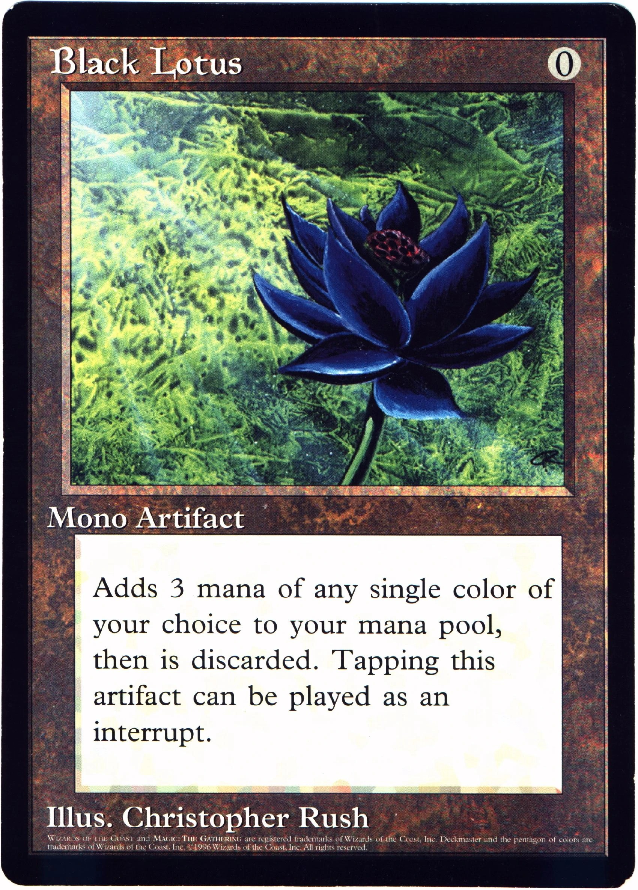
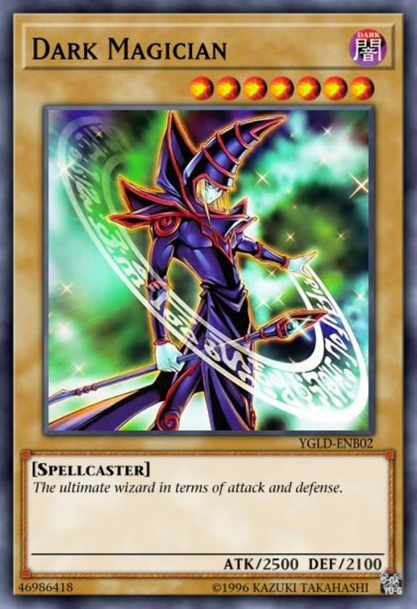

COMPARACIÓN DE LOS DOS TCG MÁS FAMOSOS DEL MUNDO
Magic The Gathering
-
DISEÑO
Comenzó con un arte retro, pero ha ido evolucionando con el tiempo. Arte occidental con un acabado increíble
-
PRECIO:
La variedad de formatos, tipos de sobres y elementos varios hacen que la persona media gaste algo más de lo que se esperaba
-
MECÁNICAS:
Juego complejo debido a los diversos tipos de cartas e interacciones, lo que hace que el ritmo sea un poco más lento.
-
ÁMBITO COMPETIVO:
Cantidad enorme de torneos a nivel tanto mundial como regional. El mundial de MTG tiene una prize pool de $1.000.000
Yugi-Oh!
-
DISEÑO:
Sencillo y simple, basado en anime. Diseño viejo y desactualizado, Konami no invierte en mejorar las ilustraciones
-
PRECIO:
Caro como cualquier TCG, sin embargo no tiene expansiones tan grandes e importantes lo que reduce su precio ligeramente
-
MECÁNICAS:
Bastante sencillas, basado en conocer bien tu mazo y juego rápido. Más enfocado a jugadores inexpertos
-
ÁMBITO COMPETIVO:
Torneos a nivel regional y mundial, casi a la misma escala que Magic, con elevados premios y una afición constante